发信人: zipp (寨的), 信区: outdoor
标 题: [PICs]车协日本分舵第一次试运行(转载)
发信站: 饮水思源 (2014年05月05日14:54:58 星期一)
【 以下文字转载自 bicycle 讨论区 】
【 原文由 zipp 于 2014年05月05日14:48:40 星期一 发表 】
【 原文链接 】
主号自杀了，借车协老板的小号发帖，首先感谢。
anyway，我是freescal。
毕业前跑车野三栖，毕业后旅居名古屋，只剩骑车一件事可做，一年多来始终单飘。
直到上个月得知，老天把野协的阳姐送来日本了，那是一头跑野双栖的强力母驴。
黄金周她来名古屋溜达一圈。
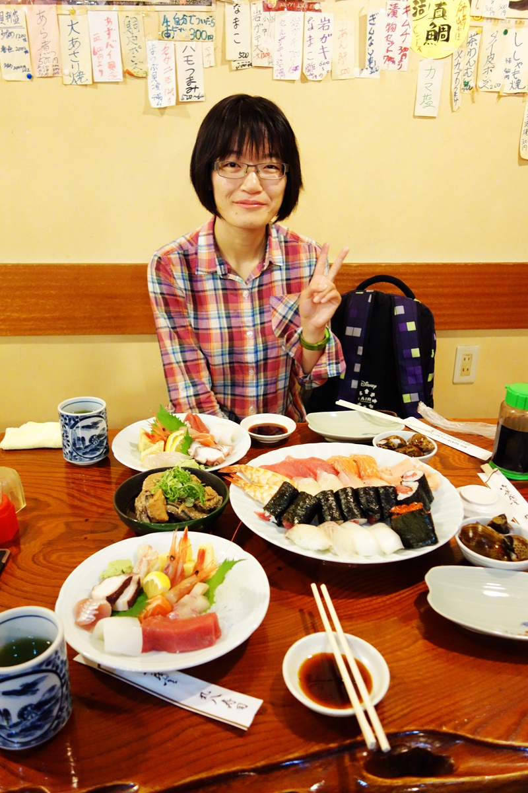 screen.width - 200){this.width = screen.width - 200}">
党章规定，三名党员以上，就应该成立支部并开展组织生活。那么我们也搞点活动吧，于
是，我就这么忽悠双栖的阳姐下海了。。。额，那个，陪我骑车了。
我一贯的认为，最近两套车协骑行服是交大最漂亮and拉风情侣装没有之一。
校运会400m冠军的腿，你们感受一下。
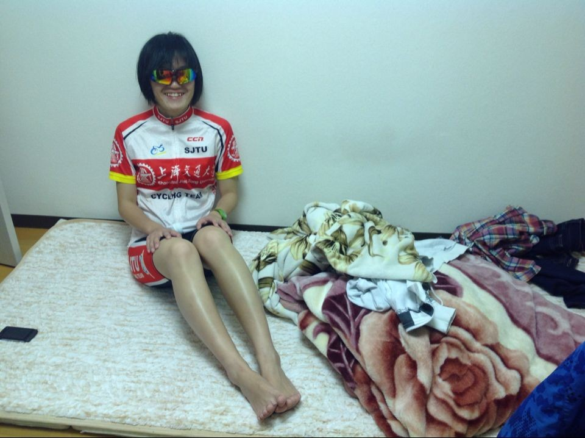 screen.width - 200){this.width = screen.width - 200}">
阳姐亲自定了路线，朝北直穿名古屋进山，去犬山市明治村，往返60+K。
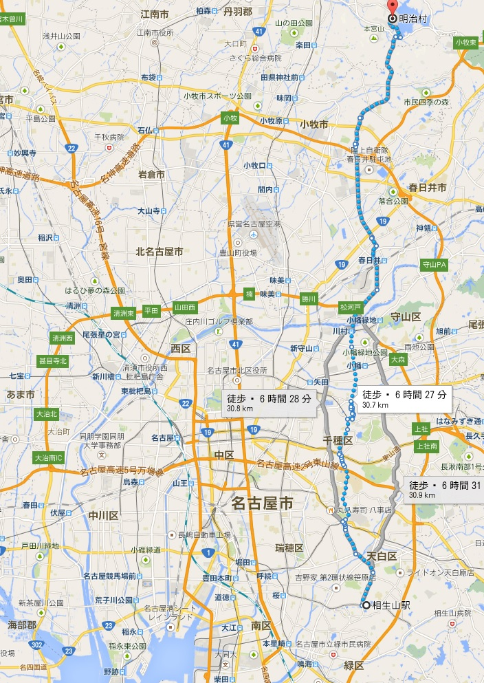 screen.width - 200){this.width = screen.width - 200}">
日本自行车实在太贵，我刚来日本时，花了公爵600的价，买了辆性能远不及5.0的车贡献
给阳姐，然后我自己借了一辆菜车，就这么上路了。
阳姐和电车。
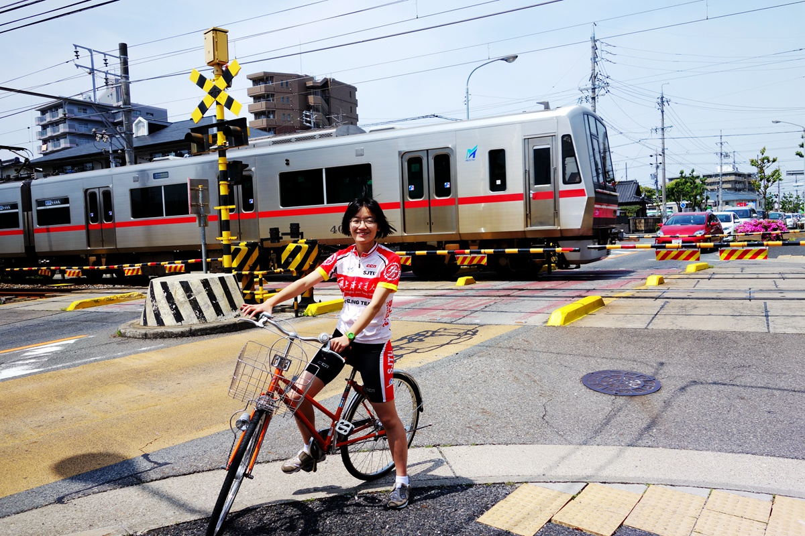 screen.width - 200){this.width = screen.width - 200}">
呵呵
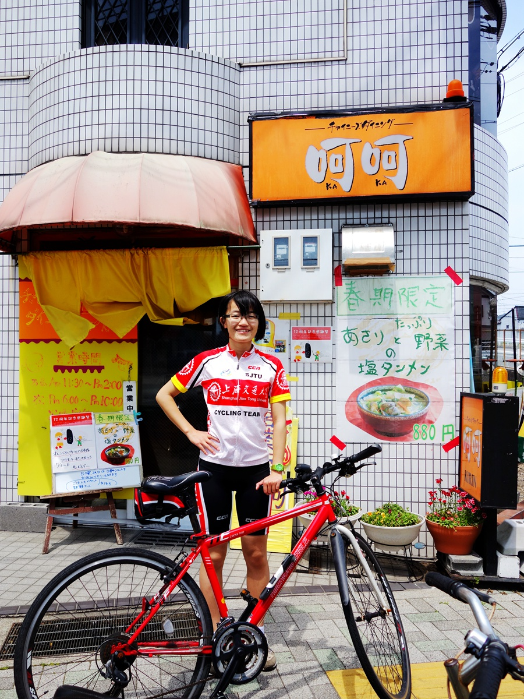 screen.width - 200){this.width = screen.width - 200}">
名古屋护城河，庄内川。阳姐骑出名古屋了
screen.width - 200){this.width = screen.width - 200}">
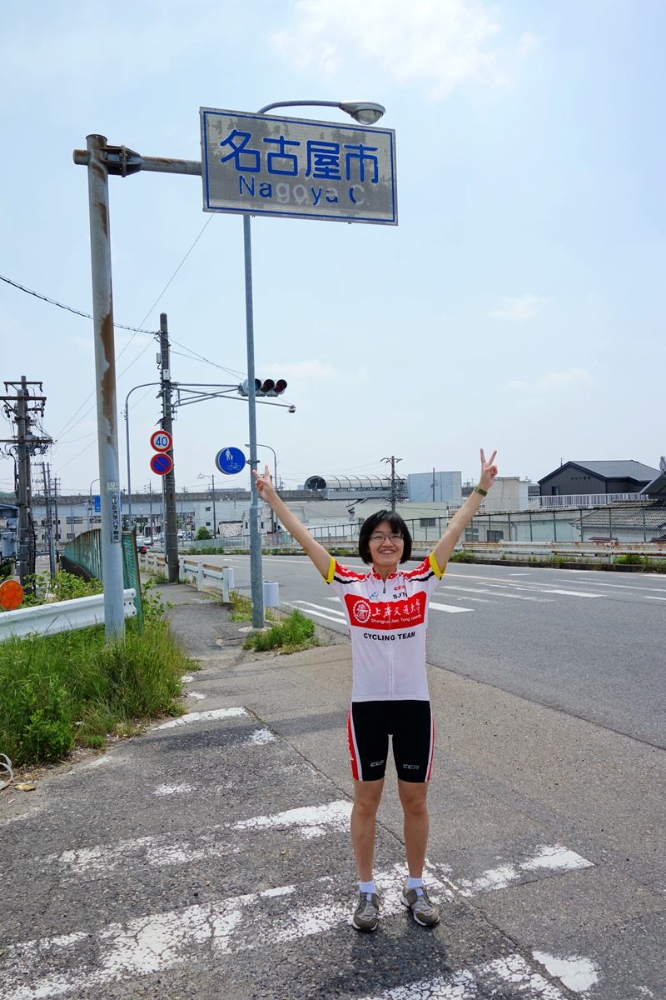 screen.width - 200){this.width = screen.width - 200}">
阳姐在路上（PS：我一直在领骑，除非拍照）
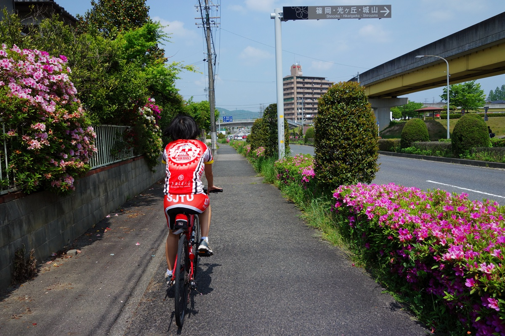 screen.width - 200){this.width = screen.width - 200}">
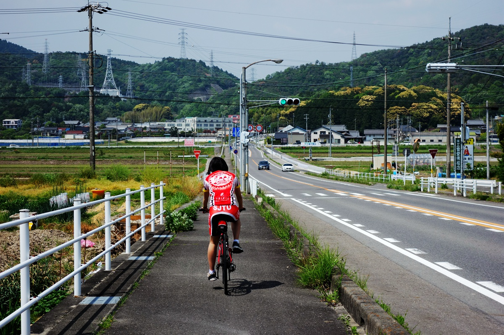 screen.width - 200){this.width = screen.width - 200}">
说到菜车，我借来的车货真价实是用来装菜的。。。
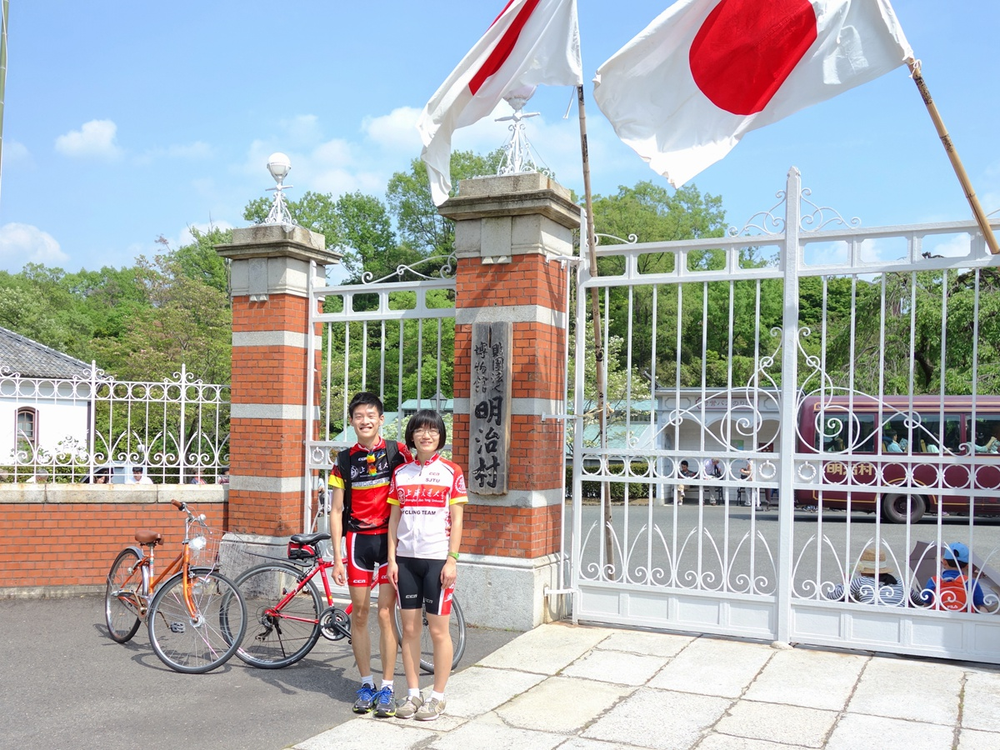 screen.width - 200){this.width = screen.width - 200}">
一条跑虫和一头母驴组成的车协日本分舵。。。求人加入。。。
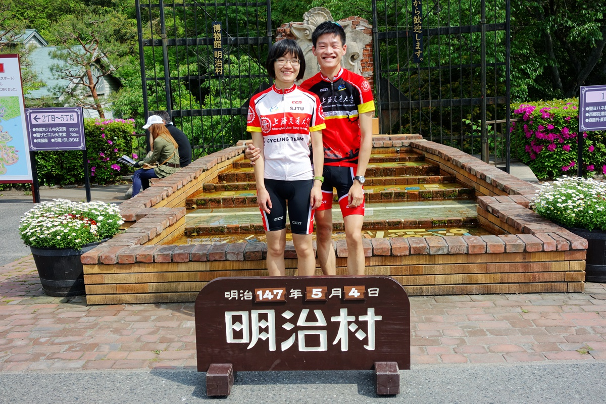 screen.width - 200){this.width = screen.width - 200}">
阳姐给骑行服做平面模特真是极好的
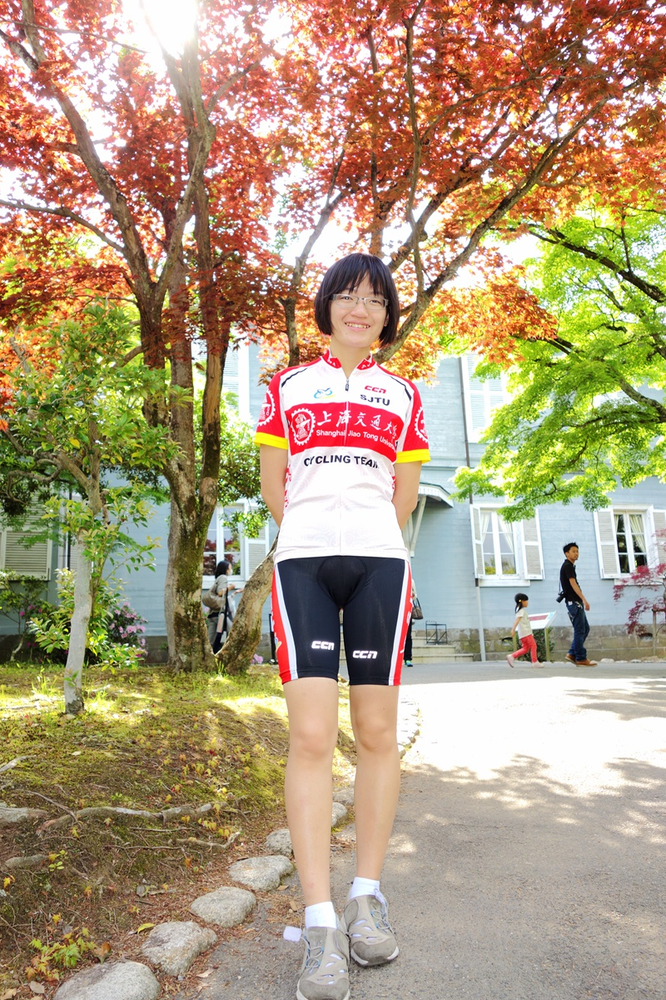 screen.width - 200){this.width = screen.width - 200}">
这货是从大连港搬回日本的，不过上面说是用来在大雾中发照明弹的。。。
screen.width - 200){this.width = screen.width - 200}">
明治时期的楼~
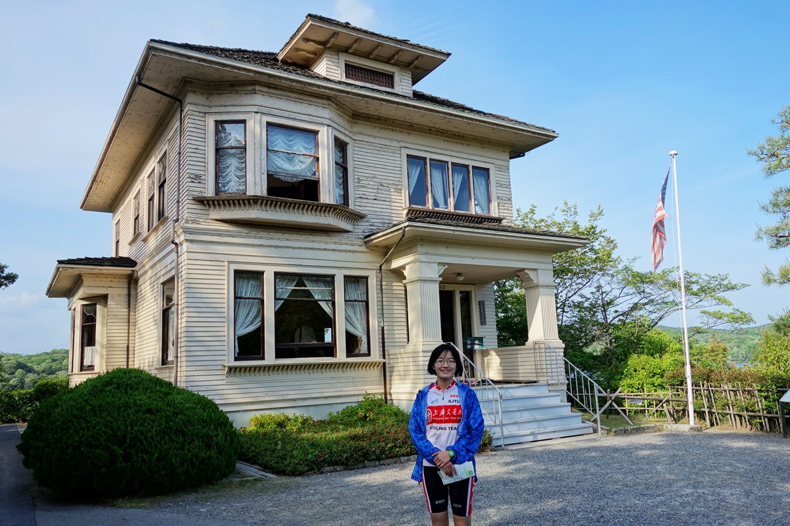 screen.width - 200){this.width = screen.width - 200}">
教堂，大清新阳姐
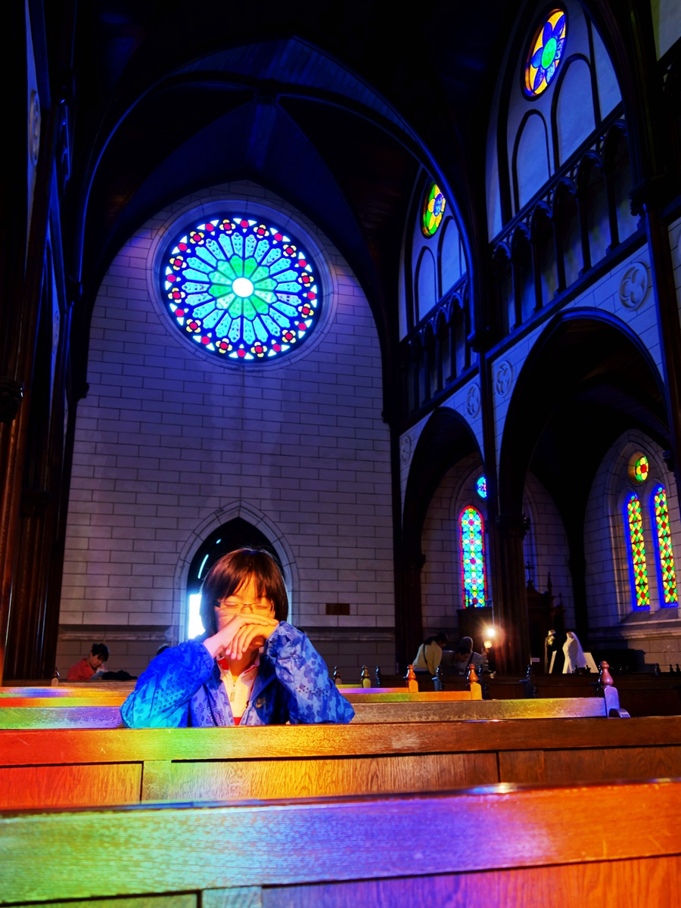 screen.width - 200){this.width = screen.width - 200}">
--
※ 来源:·饮水思源 bbs.sjtu.edu.cn·[FROM: 211.9.37.141]
※ 修改:·zipp 于 2014年05月05日14:53:51 修改本文·[FROM: 211.9.37.141]
--
※ 转载:·饮水思源 bbs.sjtu.edu.cn·[FROM: 211.9.37.141]
|